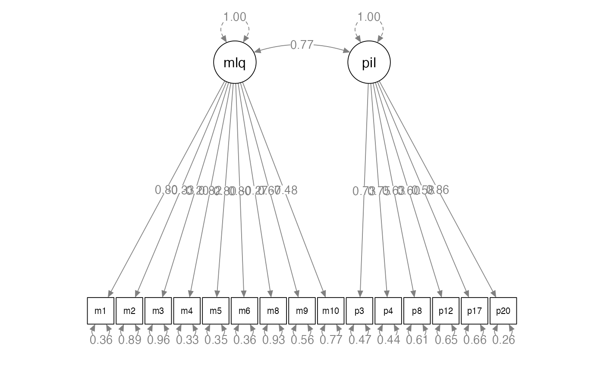
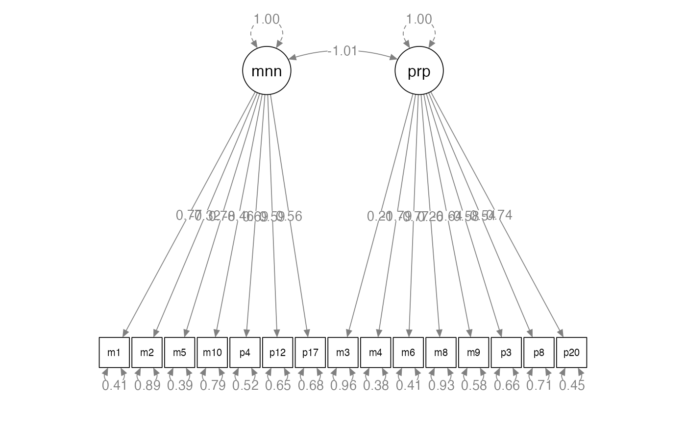
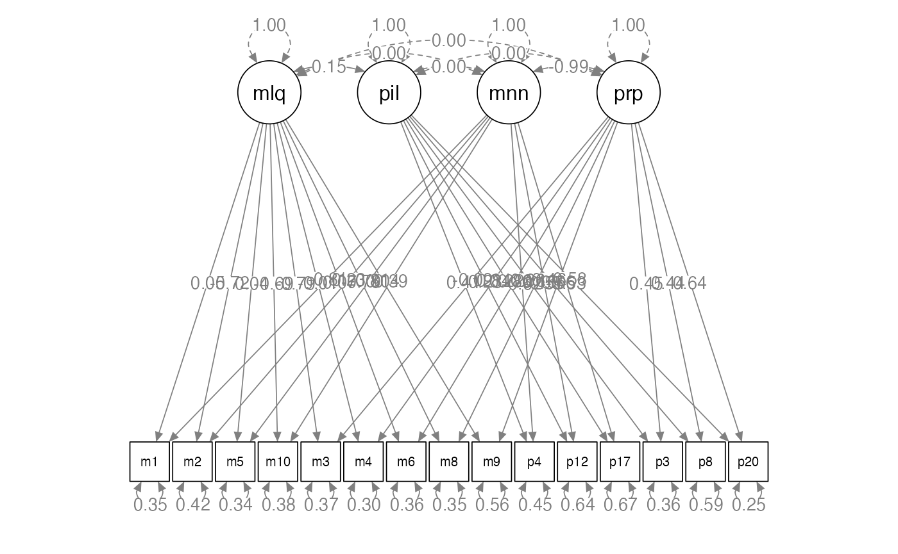
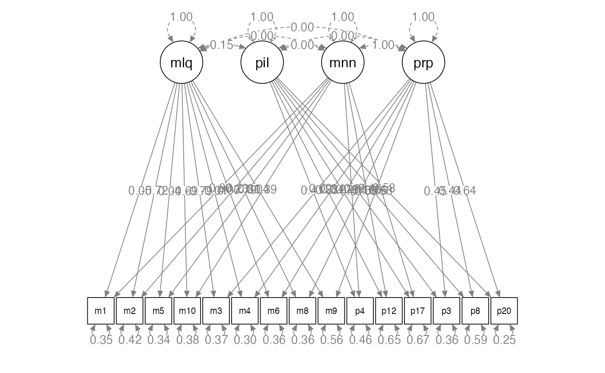

Multi-Trait Multi-Method
lecture_mtmm.RmdMulti-Trait Multi-Method SEM
- Another good resource includes: http://davidakenny.net/cm/mtmm.htm
- Traits: the latent factors you are trying to measure.
- Methods: the way you are measuring the latent factors.
When to Use
- Convergent validity: How much do different assessments measure the
same traits?
- We would like measurement 1 and measurement 2 to assess the trait equally well.
- Discriminant validity: How much do different assessment methods
diverge in measurement of different traits?
- We would like measurement 1 and measurement 2 to assess each trait differently.
- Both of these together would indicate that each measurement is equally useful.
When to Use
- Method effects: How much do the measurements cause overlap in
traits?
- We want measurement 1 to measure trait 1 and trait 2 differently.
Logic of MTMM
- We will build several different models that test the questions
listed above and compare them using nested
tests using the
anova()function.- We could also use AIC or ECVI, but generally the chi-square test is preferred.
- Another popular model comparison rule is the CFI > .01 would be considered a significant change in fit.
The Steps
- Let’s note that our model specification is slightly different than a normal CFA.
- We will not use the normal scaling on the manifest variables.
- We will instead set the variance to each latent to one using
std.lv = TRUE.
Model 1: Correlated Traits / Correlated Methods
- You will correlate traits with each other.
- You will correlate methods with each other.
- You will NOT cross correlate methods and traits.
- So how can we force
lavaanto do that?latent ~~ 0*latent

Model 1: Correlated Traits / Correlated Methods
- One of the big concerns/complaints with the traditional MTMM steps is that Model 1 is likely to create a Heywood case with a negative error variance.
- Generally, because these models are complex … most of the latent variables are correlated on purpose, so it may be hard to estimate.
Model 1: Correlated Traits / Correlated Methods
- If you get a Heywood case of negative variance:
- If you know the variance by having the real data, set it to that.
- Set the value to something small and positive.
- Set the value equal to another small positive parameter.
Model 1: Correlated Traits / Correlated Methods
- All other models are compared to Model 1.
- Model 1 represents the best case scenario, wherein traits are correlated but not perfectly and they are estimated by the measurements but not perfectly.
Example Data
- Traits:
- Meaning: MLQ 1, 2, 5, 10 and PIL 4, 12, 17
- Purpose: MLQ 3, 4, 6, 8, 9, and PIL 3, 8, 20
- Methods:
- Purpose in Life Test (p questions)
- Meaning in Life Questionnaire (m questions)
library(lavaan)
library(semPlot)
library(rio)
meaning.data <- import("data/lecture_mtmm.csv")
str(meaning.data)
#> 'data.frame': 567 obs. of 70 variables:
#> $ p1 : int 5 1 6 5 5 4 5 6 6 6 ...
#> $ p2 : num 5 3 6 5 6 5 6 6 6 5 ...
#> $ p3 : int 7 5 7 5 5 6 6 7 5 7 ...
#> $ p4 : int 7 5 6 6 7 7 7 7 5 5 ...
#> $ p5 : int 4 2 7 3 6 4 6 5 4 6 ...
#> $ p6 : int 5 5 7 5 6 4 5 6 3 6 ...
#> $ p7 : num 7 5 7 6 5 6 7 7 5 7 ...
#> $ p8 : int 5 5 6 5 5 5 5 6 5 7 ...
#> $ p9 : int 7 3 6 5 7 5 6 7 4 6 ...
#> $ p10: int 6 3 7 6 7 5 6 6 3 4 ...
#> $ p11: int 7 4 6 6 7 7 6 7 4 6 ...
#> $ p12: int 4 5 7 5 1 5 6 5 4 5 ...
#> $ p13: num 7 5 6 6 6 5 7 4 6 7 ...
#> $ p14: num 4 7 6 5 6 5 7 7 7 1 ...
#> $ p15: num 7 5 6 5 7 3 6 3 2 5 ...
#> $ p16: int 7 7 7 5 7 7 6 7 2 6 ...
#> $ p17: num 5 5 5 6 7 5 6 7 5 5 ...
#> $ p18: int 1 7 7 6 7 5 1 1 6 5 ...
#> $ p19: int 5 3 6 5 6 4 5 6 4 6 ...
#> $ p20: int 6 5 7 5 5 6 6 7 4 5 ...
#> $ l1 : num 1 0 1 1 1 1 1 1 1 1 ...
#> $ l2 : int 1 0 1 1 1 1 1 0 1 1 ...
#> $ l3 : int 1 1 1 1 1 1 1 1 1 1 ...
#> $ l4 : num 1 0 1 1 1 1 1 1 1 1 ...
#> $ l5 : int 0 0 1 0 1 0 1 0 1 1 ...
#> $ l6 : int 1 0 1 1 1 1 0 1 0 1 ...
#> $ l7 : num 1 1 1 1 1 1 1 1 1 1 ...
#> $ l8 : int 1 1 1 1 0 0 0 1 1 1 ...
#> $ l9 : int 1 0 1 1 1 1 1 1 1 1 ...
#> $ l10: num 1 0 1 0.77 1 1 0 1 0 0 ...
#> $ l11: int 1 0 1 1 1 1 1 1 0 1 ...
#> $ l12: num 1 1 1 1 1 1 1 1 1 1 ...
#> $ l13: int 1 1 1 1 1 1 1 1 1 1 ...
#> $ l14: int 0 1 1 1 1 1 1 1 1 0 ...
#> $ l15: num 1 0 1 0 1 0 0 0 0 0 ...
#> $ l16: int 1 1 1 1 1 1 1 1 0 1 ...
#> $ l17: num 1 0 1 1 1 1 1 1 1 1 ...
#> $ l18: int 0 1 1 0 1 0 1 1 1 1 ...
#> $ l19: num 0 0 1 1 1 0 1 0 1 1 ...
#> $ l20: int 1 0 1 1 1 1 1 1 0 1 ...
#> $ m1 : int 6 4 6 6 7 5 7 6 5 5 ...
#> $ m2 : int 5 7 4 5 3 7 4 5 6 2 ...
#> $ m3 : int 2 7 3 6 2 6 5 5 6 5 ...
#> $ m4 : int 4 3 5 6 7 5 4 6 4 5 ...
#> $ m5 : int 6 4 6 6 7 6 6 7 4 6 ...
#> $ m6 : int 4 1 6 5 7 6 3 7 3 5 ...
#> $ m7 : int 2 6 2 5 3 4 4 5 6 2 ...
#> $ m8 : int 4 3 3 5 2 6 6 4 6 5 ...
#> $ m9 : int 7 6 7 6 7 6 7 7 5 3 ...
#> $ m10: int 4 3 1 6 2 4 7 1 5 3 ...
#> $ s1 : num 2 3 5 3 5 4 4 7 4 1 ...
#> $ s2 : num 2 3 5 3 5 4 4 6 4 1 ...
#> $ s3 : num 1 5 2 3 3 2 2 5 5 2 ...
#> $ s4 : num 1 3 2 2 2 4 3 2 5 2 ...
#> $ s5 : num 2 5 3 3 1 4 6 4 5 5 ...
#> $ s6 : num 3 7 6 4 6 6 7 7 7 6 ...
#> $ s7 : int 5 7 7 4 4 6 7 5 6 6 ...
#> $ s8 : num 1 7 2 3 1 2 2 6 7 6 ...
#> $ s9 : num 1 7 2 3 2 2 2 1 2 2 ...
#> $ s10: num 2 7 4 4 5 2 6 5 5 5 ...
#> $ s11: num 1 2 2 3 2 2 2 1 4 3 ...
#> $ s12: num 1 7 2 3 2 2 3 3 2 4 ...
#> $ s13: int 1 7 2 4 3 2 2 2 4 3 ...
#> $ s14: num 3 2 2 2 3 4 2 5 5 2 ...
#> $ s15: num 1 2 2 2 5 4 2 6 6 2 ...
#> $ s16: int 2 3 2 2 3 5 4 2 5 2 ...
#> $ s17: num 1 5 1 4 2 5 6 4 6 2 ...
#> $ s18: num 1 2 4 4 6 6 4 7 4 3 ...
#> $ s19: num 2 7 4 3 2 2 4 6 5 4 ...
#> $ s20: num 1 2 5 2 5 4 5 6 4 3 ...Build the Measurement Models
methods.model <- '
mlq =~ m1 + m2 + m3 + m4 + m5 + m6 + m8 + m9 + m10
pil =~ p3 + p4 + p8 + p12 + p17 + p20
'
traits.model <- '
meaning =~ m1 + m2 + m5 + m10 + p4 + p12 + p17
purpose =~ m3 + m4 + m6 + m8 + m9 + p3 + p8 + p20
'Analyze the Measurement Models
methods.fit <- cfa(model = methods.model,
data = meaning.data,
std.lv = TRUE)
traits.fit <- cfa(model = traits.model,
data = meaning.data,
std.lv = TRUE)
#> Warning: lavaan->lav_object_post_check():
#> covariance matrix of latent variables is not positive definite ; use
#> lavInspect(fit, "cov.lv") to investigate.
lavInspect(traits.fit, "cor.lv")
#> meanng purpos
#> meaning 1.000
#> purpose -1.011 1.000Summarize the Measurement Models
summary(methods.fit,
rsquare = TRUE,
standardized = TRUE,
fit.measures = TRUE)
#> lavaan 0.6-19 ended normally after 23 iterations
#>
#> Estimator ML
#> Optimization method NLMINB
#> Number of model parameters 31
#>
#> Number of observations 567
#>
#> Model Test User Model:
#>
#> Test statistic 1126.227
#> Degrees of freedom 89
#> P-value (Chi-square) 0.000
#>
#> Model Test Baseline Model:
#>
#> Test statistic 4415.161
#> Degrees of freedom 105
#> P-value 0.000
#>
#> User Model versus Baseline Model:
#>
#> Comparative Fit Index (CFI) 0.759
#> Tucker-Lewis Index (TLI) 0.716
#>
#> Loglikelihood and Information Criteria:
#>
#> Loglikelihood user model (H0) -13021.841
#> Loglikelihood unrestricted model (H1) -12458.727
#>
#> Akaike (AIC) 26105.681
#> Bayesian (BIC) 26240.232
#> Sample-size adjusted Bayesian (SABIC) 26141.822
#>
#> Root Mean Square Error of Approximation:
#>
#> RMSEA 0.143
#> 90 Percent confidence interval - lower 0.136
#> 90 Percent confidence interval - upper 0.151
#> P-value H_0: RMSEA <= 0.050 0.000
#> P-value H_0: RMSEA >= 0.080 1.000
#>
#> Standardized Root Mean Square Residual:
#>
#> SRMR 0.121
#>
#> Parameter Estimates:
#>
#> Standard errors Standard
#> Information Expected
#> Information saturated (h1) model Structured
#>
#> Latent Variables:
#> Estimate Std.Err z-value P(>|z|) Std.lv Std.all
#> mlq =~
#> m1 1.084 0.048 22.360 0.000 1.084 0.802
#> m2 -0.578 0.076 -7.656 0.000 -0.578 -0.328
#> m3 -0.352 0.075 -4.681 0.000 -0.352 -0.204
#> m4 1.121 0.049 23.095 0.000 1.121 0.819
#> m5 0.977 0.043 22.480 0.000 0.977 0.805
#> m6 1.149 0.052 22.247 0.000 1.149 0.799
#> m8 -0.454 0.073 -6.212 0.000 -0.454 -0.269
#> m9 0.980 0.057 17.238 0.000 0.980 0.665
#> m10 -0.906 0.078 -11.552 0.000 -0.906 -0.477
#> pil =~
#> p3 0.776 0.041 19.140 0.000 0.776 0.725
#> p4 0.799 0.040 20.033 0.000 0.799 0.749
#> p8 0.626 0.040 15.793 0.000 0.626 0.626
#> p12 0.890 0.060 14.819 0.000 0.890 0.595
#> p17 0.663 0.046 14.371 0.000 0.663 0.580
#> p20 0.923 0.038 24.430 0.000 0.923 0.858
#>
#> Covariances:
#> Estimate Std.Err z-value P(>|z|) Std.lv Std.all
#> mlq ~~
#> pil 0.768 0.023 33.098 0.000 0.768 0.768
#>
#> Variances:
#> Estimate Std.Err z-value P(>|z|) Std.lv Std.all
#> .m1 0.653 0.048 13.696 0.000 0.653 0.357
#> .m2 2.779 0.167 16.631 0.000 2.779 0.893
#> .m3 2.851 0.170 16.763 0.000 2.851 0.958
#> .m4 0.616 0.046 13.273 0.000 0.616 0.329
#> .m5 0.519 0.038 13.631 0.000 0.519 0.352
#> .m6 0.747 0.054 13.756 0.000 0.747 0.361
#> .m8 2.656 0.159 16.704 0.000 2.656 0.928
#> .m9 1.212 0.078 15.468 0.000 1.212 0.558
#> .m10 2.779 0.170 16.331 0.000 2.779 0.772
#> .p3 0.543 0.038 14.444 0.000 0.543 0.474
#> .p4 0.498 0.035 14.060 0.000 0.498 0.438
#> .p8 0.608 0.039 15.460 0.000 0.608 0.608
#> .p12 1.444 0.092 15.670 0.000 1.444 0.646
#> .p17 0.867 0.055 15.758 0.000 0.867 0.663
#> .p20 0.306 0.028 10.814 0.000 0.306 0.264
#> mlq 1.000 1.000 1.000
#> pil 1.000 1.000 1.000
#>
#> R-Square:
#> Estimate
#> m1 0.643
#> m2 0.107
#> m3 0.042
#> m4 0.671
#> m5 0.648
#> m6 0.639
#> m8 0.072
#> m9 0.442
#> m10 0.228
#> p3 0.526
#> p4 0.562
#> p8 0.392
#> p12 0.354
#> p17 0.337
#> p20 0.736
summary(traits.fit,
rsquare = TRUE,
standardized = TRUE,
fit.measures = TRUE)
#> lavaan 0.6-19 ended normally after 26 iterations
#>
#> Estimator ML
#> Optimization method NLMINB
#> Number of model parameters 31
#>
#> Number of observations 567
#>
#> Model Test User Model:
#>
#> Test statistic 1427.750
#> Degrees of freedom 89
#> P-value (Chi-square) 0.000
#>
#> Model Test Baseline Model:
#>
#> Test statistic 4415.161
#> Degrees of freedom 105
#> P-value 0.000
#>
#> User Model versus Baseline Model:
#>
#> Comparative Fit Index (CFI) 0.689
#> Tucker-Lewis Index (TLI) 0.634
#>
#> Loglikelihood and Information Criteria:
#>
#> Loglikelihood user model (H0) -13172.602
#> Loglikelihood unrestricted model (H1) -12458.727
#>
#> Akaike (AIC) 26407.205
#> Bayesian (BIC) 26541.756
#> Sample-size adjusted Bayesian (SABIC) 26443.345
#>
#> Root Mean Square Error of Approximation:
#>
#> RMSEA 0.163
#> 90 Percent confidence interval - lower 0.155
#> 90 Percent confidence interval - upper 0.170
#> P-value H_0: RMSEA <= 0.050 0.000
#> P-value H_0: RMSEA >= 0.080 1.000
#>
#> Standardized Root Mean Square Residual:
#>
#> SRMR 0.127
#>
#> Parameter Estimates:
#>
#> Standard errors Standard
#> Information Expected
#> Information saturated (h1) model Structured
#>
#> Latent Variables:
#> Estimate Std.Err z-value P(>|z|) Std.lv Std.all
#> meaning =~
#> m1 1.041 0.049 21.190 0.000 1.041 0.770
#> m2 -0.572 0.075 -7.637 0.000 -0.572 -0.324
#> m5 0.949 0.044 21.661 0.000 0.949 0.782
#> m10 -0.872 0.078 -11.166 0.000 -0.872 -0.460
#> p4 0.741 0.040 18.398 0.000 0.741 0.695
#> p12 0.887 0.059 15.036 0.000 0.887 0.593
#> p17 0.644 0.046 14.125 0.000 0.644 0.563
#> purpose =~
#> m3 0.354 0.075 4.756 0.000 0.354 0.205
#> m4 -1.076 0.049 -21.856 0.000 -1.076 -0.786
#> m6 -1.106 0.052 -21.158 0.000 -1.106 -0.769
#> m8 0.437 0.073 6.017 0.000 0.437 0.258
#> m9 -0.950 0.057 -16.676 0.000 -0.950 -0.644
#> p3 -0.623 0.042 -14.694 0.000 -0.623 -0.582
#> p8 -0.536 0.040 -13.301 0.000 -0.536 -0.535
#> p20 -0.800 0.040 -20.170 0.000 -0.800 -0.743
#>
#> Covariances:
#> Estimate Std.Err z-value P(>|z|) Std.lv Std.all
#> meaning ~~
#> purpose -1.011 0.011 -95.053 0.000 -1.011 -1.011
#>
#> Variances:
#> Estimate Std.Err z-value P(>|z|) Std.lv Std.all
#> .m1 0.744 0.051 14.635 0.000 0.744 0.407
#> .m2 2.786 0.167 16.678 0.000 2.786 0.895
#> .m5 0.573 0.040 14.436 0.000 0.573 0.389
#> .m10 2.839 0.172 16.468 0.000 2.839 0.789
#> .p4 0.588 0.038 15.483 0.000 0.588 0.517
#> .p12 1.449 0.090 16.074 0.000 1.449 0.648
#> .p17 0.893 0.055 16.188 0.000 0.893 0.683
#> .m3 2.850 0.170 16.777 0.000 2.850 0.958
#> .m4 0.716 0.050 14.430 0.000 0.716 0.382
#> .m6 0.846 0.058 14.708 0.000 0.846 0.409
#> .m8 2.672 0.160 16.739 0.000 2.672 0.933
#> .m9 1.270 0.080 15.828 0.000 1.270 0.585
#> .p3 0.758 0.047 16.116 0.000 0.758 0.661
#> .p8 0.714 0.044 16.274 0.000 0.714 0.713
#> .p20 0.518 0.034 15.038 0.000 0.518 0.448
#> meaning 1.000 1.000 1.000
#> purpose 1.000 1.000 1.000
#>
#> R-Square:
#> Estimate
#> m1 0.593
#> m2 0.105
#> m5 0.611
#> m10 0.211
#> p4 0.483
#> p12 0.352
#> p17 0.317
#> m3 0.042
#> m4 0.618
#> m6 0.591
#> m8 0.067
#> m9 0.415
#> p3 0.339
#> p8 0.287
#> p20 0.552Diagram the Measurement Models
semPaths(methods.fit,
whatLabels = "std",
layout = "tree",
edge.label.cex = 1)
semPaths(traits.fit,
whatLabels = "std",
layout = "tree",
edge.label.cex = 1)
Model 1: Correlated Traits / Correlated Methods
step1.model <- '
mlq =~ m1 + m2 + m3 + m4 + m5 + m6 + m8 + m9 + m10
pil =~ p3 + p4 + p8 + p12 + p17 + p20
meaning =~ m1 + m2 + m5 + m10 + p4 + p12 + p17
purpose =~ m3 + m4 + m6 + m8 + m9 + p3 + p8 + p20
##fix the covariances
mlq ~~ 0*meaning
pil ~~ 0*meaning
mlq ~~ 0*purpose
pil ~~ 0*purpose
'Model 1: Correlated Traits / Correlated Methods
step1.fit <- cfa(model = step1.model,
data = meaning.data,
std.lv = TRUE)
summary(step1.fit,
rsquare = TRUE,
standardized = TRUE,
fit.measures = TRUE)
#> lavaan 0.6-19 ended normally after 61 iterations
#>
#> Estimator ML
#> Optimization method NLMINB
#> Number of model parameters 47
#>
#> Number of observations 567
#>
#> Model Test User Model:
#>
#> Test statistic 144.899
#> Degrees of freedom 73
#> P-value (Chi-square) 0.000
#>
#> Model Test Baseline Model:
#>
#> Test statistic 4415.161
#> Degrees of freedom 105
#> P-value 0.000
#>
#> User Model versus Baseline Model:
#>
#> Comparative Fit Index (CFI) 0.983
#> Tucker-Lewis Index (TLI) 0.976
#>
#> Loglikelihood and Information Criteria:
#>
#> Loglikelihood user model (H0) -12531.177
#> Loglikelihood unrestricted model (H1) -12458.727
#>
#> Akaike (AIC) 25156.354
#> Bayesian (BIC) 25360.351
#> Sample-size adjusted Bayesian (SABIC) 25211.148
#>
#> Root Mean Square Error of Approximation:
#>
#> RMSEA 0.042
#> 90 Percent confidence interval - lower 0.032
#> 90 Percent confidence interval - upper 0.052
#> P-value H_0: RMSEA <= 0.050 0.915
#> P-value H_0: RMSEA >= 0.080 0.000
#>
#> Standardized Root Mean Square Residual:
#>
#> SRMR 0.024
#>
#> Parameter Estimates:
#>
#> Standard errors Standard
#> Information Expected
#> Information saturated (h1) model Structured
#>
#> Latent Variables:
#> Estimate Std.Err z-value P(>|z|) Std.lv Std.all
#> mlq =~
#> m1 0.072 0.079 0.912 0.362 0.072 0.053
#> m2 -1.276 0.071 -17.912 0.000 -1.276 -0.723
#> m3 -1.364 0.066 -20.783 0.000 -1.364 -0.791
#> m4 -0.011 0.082 -0.133 0.894 -0.011 -0.008
#> m5 0.044 0.071 0.624 0.533 0.044 0.036
#> m6 0.097 0.084 1.146 0.252 0.097 0.067
#> m8 -1.332 0.065 -20.402 0.000 -1.332 -0.787
#> m9 0.066 0.081 0.813 0.416 0.066 0.045
#> m10 -1.302 0.082 -15.838 0.000 -1.302 -0.686
#> pil =~
#> p3 0.708 0.043 16.321 0.000 0.708 0.660
#> p4 0.441 0.041 10.812 0.000 0.441 0.413
#> p8 0.463 0.042 10.942 0.000 0.463 0.463
#> p12 0.344 0.063 5.456 0.000 0.344 0.230
#> p17 0.255 0.049 5.236 0.000 0.255 0.223
#> p20 0.628 0.038 16.314 0.000 0.628 0.583
#> meaning =~
#> m1 -1.090 0.049 -22.359 0.000 -1.090 -0.806
#> m2 0.414 0.111 3.728 0.000 0.414 0.234
#> m5 -0.987 0.044 -22.682 0.000 -0.987 -0.813
#> m10 0.745 0.115 6.503 0.000 0.745 0.392
#> p4 -0.658 0.042 -15.527 0.000 -0.658 -0.617
#> p12 -0.824 0.061 -13.569 0.000 -0.824 -0.551
#> p17 -0.609 0.047 -13.032 0.000 -0.609 -0.532
#> purpose =~
#> m3 -0.157 0.115 -1.369 0.171 -0.157 -0.091
#> m4 1.149 0.048 23.832 0.000 1.149 0.839
#> m6 1.147 0.052 21.965 0.000 1.147 0.798
#> m8 -0.273 0.112 -2.435 0.015 -0.273 -0.161
#> m9 0.980 0.057 17.147 0.000 0.980 0.665
#> p3 0.486 0.045 10.692 0.000 0.486 0.453
#> p8 0.441 0.042 10.443 0.000 0.441 0.441
#> p20 0.693 0.043 16.270 0.000 0.693 0.643
#>
#> Covariances:
#> Estimate Std.Err z-value P(>|z|) Std.lv Std.all
#> mlq ~~
#> meaning 0.000 0.000 0.000
#> pil ~~
#> meaning 0.000 0.000 0.000
#> mlq ~~
#> purpose 0.000 0.000 0.000
#> pil ~~
#> purpose 0.000 0.000 0.000
#> mlq ~~
#> pil 0.147 0.083 1.763 0.078 0.147 0.147
#> meaning ~~
#> purpose -0.987 0.011 -92.538 0.000 -0.987 -0.987
#>
#> Variances:
#> Estimate Std.Err z-value P(>|z|) Std.lv Std.all
#> .m1 0.635 0.048 13.361 0.000 0.635 0.347
#> .m2 1.316 0.100 13.204 0.000 1.316 0.423
#> .m3 1.089 0.094 11.580 0.000 1.089 0.366
#> .m4 0.553 0.045 12.200 0.000 0.553 0.295
#> .m5 0.498 0.038 13.148 0.000 0.498 0.338
#> .m6 0.743 0.055 13.632 0.000 0.743 0.359
#> .m8 1.015 0.088 11.561 0.000 1.015 0.355
#> .m9 1.208 0.078 15.433 0.000 1.208 0.556
#> .m10 1.352 0.104 13.050 0.000 1.352 0.375
#> .p3 0.411 0.041 9.997 0.000 0.411 0.358
#> .p4 0.511 0.035 14.556 0.000 0.511 0.449
#> .p8 0.592 0.039 15.029 0.000 0.592 0.591
#> .p12 1.440 0.090 16.075 0.000 1.440 0.644
#> .p17 0.872 0.054 16.150 0.000 0.872 0.667
#> .p20 0.287 0.030 9.490 0.000 0.287 0.247
#> mlq 1.000 1.000 1.000
#> pil 1.000 1.000 1.000
#> meaning 1.000 1.000 1.000
#> purpose 1.000 1.000 1.000
#>
#> R-Square:
#> Estimate
#> m1 0.653
#> m2 0.577
#> m3 0.634
#> m4 0.705
#> m5 0.662
#> m6 0.641
#> m8 0.645
#> m9 0.444
#> m10 0.625
#> p3 0.642
#> p4 0.551
#> p8 0.409
#> p12 0.356
#> p17 0.333
#> p20 0.753Model 1: Correlated Traits / Correlated Methods
semPaths(step1.fit,
whatLabels = "std",
layout = "tree",
edge.label.cex = 1)
Model 2: No Traits / Correlated Methods
- Completely delete the trait latent side.
- We are testing the methods only model.
- Model 1 versus Model 2
- Convergent validity: Independent measures of the same trait are correlated
- You want Model 2 to be worse than Model 1.
- Model 1 has both traits and methods, while Model 2 only has methods. If Model 2 is good, that means that methods is the best estimate for the data and that traits are not useful (that’s bad).

Model 2: No Traits / Correlated Methods
- Model 2 is worse than Model 1, implying we need the traits to interpret the data, supporting convergent validity.
##model 2 is the methods model
##we've already checked it out
anova(step1.fit, methods.fit)
#>
#> Chi-Squared Difference Test
#>
#> Df AIC BIC Chisq Chisq diff RMSEA Df diff Pr(>Chisq)
#> step1.fit 73 25156 25360 144.9
#> methods.fit 89 26106 26240 1126.2 981.33 0.3262 16 < 2.2e-16 ***
#> ---
#> Signif. codes: 0 '***' 0.001 '**' 0.01 '*' 0.05 '.' 0.1 ' ' 1
fitmeasures(step1.fit, "cfi")
#> cfi
#> 0.983
fitmeasures(methods.fit, "cfi")
#> cfi
#> 0.759Model 3: Perfectly Correlated Traits / Freely Correlated Methods
- In this model, we will include both traits and methods.
- We will set the covariances for traits to one.
- By setting these to one, we are testing if the traits are exactly the same, which would indicate we are not measuring separate variables.
- Discriminant validity: you want traits to measure different things.
- Therefore, we want Model 1 to be better than Model 3.

Model 3: Perfectly Correlated Traits / Freely Correlated Methods
step3.model <- '
mlq =~ m1 + m2 + m3 + m4 + m5 + m6 + m8 + m9 + m10
pil =~ p3 + p4 + p8 + p12 + p17 + p20
meaning =~ m1 + m2 + m5 + m10 + p4 + p12 + p17
purpose =~ m3 + m4 + m6 + m8 + m9 + p3 + p8 + p20
##fix the covariances
mlq ~~ 0*meaning
pil ~~ 0*meaning
mlq ~~ 0*purpose
pil ~~ 0*purpose
meaning ~~ 1*purpose
'Model 3: Perfectly Correlated Traits / Freely Correlated Methods
step3.fit <- cfa(model = step3.model,
data = meaning.data,
std.lv = TRUE)
summary(step3.fit,
rsquare = TRUE,
standardized = TRUE,
fit.measure = TRUE)
#> lavaan 0.6-19 ended normally after 47 iterations
#>
#> Estimator ML
#> Optimization method NLMINB
#> Number of model parameters 46
#>
#> Number of observations 567
#>
#> Model Test User Model:
#>
#> Test statistic 146.376
#> Degrees of freedom 74
#> P-value (Chi-square) 0.000
#>
#> Model Test Baseline Model:
#>
#> Test statistic 4415.161
#> Degrees of freedom 105
#> P-value 0.000
#>
#> User Model versus Baseline Model:
#>
#> Comparative Fit Index (CFI) 0.983
#> Tucker-Lewis Index (TLI) 0.976
#>
#> Loglikelihood and Information Criteria:
#>
#> Loglikelihood user model (H0) -12531.915
#> Loglikelihood unrestricted model (H1) -12458.727
#>
#> Akaike (AIC) 25155.830
#> Bayesian (BIC) 25355.487
#> Sample-size adjusted Bayesian (SABIC) 25209.458
#>
#> Root Mean Square Error of Approximation:
#>
#> RMSEA 0.042
#> 90 Percent confidence interval - lower 0.032
#> 90 Percent confidence interval - upper 0.051
#> P-value H_0: RMSEA <= 0.050 0.920
#> P-value H_0: RMSEA >= 0.080 0.000
#>
#> Standardized Root Mean Square Residual:
#>
#> SRMR 0.024
#>
#> Parameter Estimates:
#>
#> Standard errors Standard
#> Information Expected
#> Information saturated (h1) model Structured
#>
#> Latent Variables:
#> Estimate Std.Err z-value P(>|z|) Std.lv Std.all
#> mlq =~
#> m1 0.072 0.078 0.922 0.357 0.072 0.053
#> m2 -1.276 0.071 -17.952 0.000 -1.276 -0.723
#> m3 -1.364 0.066 -20.794 0.000 -1.364 -0.791
#> m4 -0.011 0.080 -0.134 0.894 -0.011 -0.008
#> m5 0.045 0.070 0.635 0.525 0.045 0.037
#> m6 0.096 0.083 1.164 0.245 0.096 0.067
#> m8 -1.331 0.065 -20.426 0.000 -1.331 -0.787
#> m9 0.065 0.080 0.818 0.413 0.065 0.044
#> m10 -1.302 0.082 -15.883 0.000 -1.302 -0.686
#> pil =~
#> p3 0.710 0.043 16.354 0.000 0.710 0.663
#> p4 0.436 0.041 10.710 0.000 0.436 0.409
#> p8 0.464 0.042 10.963 0.000 0.464 0.464
#> p12 0.339 0.063 5.380 0.000 0.339 0.227
#> p17 0.251 0.049 5.152 0.000 0.251 0.220
#> p20 0.627 0.039 16.280 0.000 0.627 0.583
#> meaning =~
#> m1 1.087 0.049 22.366 0.000 1.087 0.804
#> m2 -0.409 0.110 -3.716 0.000 -0.409 -0.232
#> m5 0.984 0.043 22.665 0.000 0.984 0.810
#> m10 -0.743 0.114 -6.543 0.000 -0.743 -0.391
#> p4 0.654 0.042 15.439 0.000 0.654 0.613
#> p12 0.819 0.061 13.511 0.000 0.819 0.548
#> p17 0.606 0.047 12.981 0.000 0.606 0.530
#> purpose =~
#> m3 -0.155 0.113 -1.364 0.173 -0.155 -0.090
#> m4 1.145 0.048 23.825 0.000 1.145 0.836
#> m6 1.142 0.052 21.918 0.000 1.142 0.794
#> m8 -0.270 0.111 -2.440 0.015 -0.270 -0.160
#> m9 0.978 0.057 17.147 0.000 0.978 0.664
#> p3 0.482 0.045 10.631 0.000 0.482 0.450
#> p8 0.440 0.042 10.424 0.000 0.440 0.440
#> p20 0.689 0.043 16.198 0.000 0.689 0.640
#>
#> Covariances:
#> Estimate Std.Err z-value P(>|z|) Std.lv Std.all
#> mlq ~~
#> meaning 0.000 0.000 0.000
#> pil ~~
#> meaning 0.000 0.000 0.000
#> mlq ~~
#> purpose 0.000 0.000 0.000
#> pil ~~
#> purpose 0.000 0.000 0.000
#> meaning ~~
#> purpose 1.000 1.000 1.000
#> mlq ~~
#> pil 0.146 0.082 1.785 0.074 0.146 0.146
#>
#> Variances:
#> Estimate Std.Err z-value P(>|z|) Std.lv Std.all
#> .m1 0.641 0.047 13.742 0.000 0.641 0.351
#> .m2 1.319 0.100 13.211 0.000 1.319 0.424
#> .m3 1.090 0.094 11.582 0.000 1.090 0.366
#> .m4 0.563 0.044 12.730 0.000 0.563 0.301
#> .m5 0.505 0.037 13.580 0.000 0.505 0.342
#> .m6 0.754 0.054 13.959 0.000 0.754 0.365
#> .m8 1.017 0.088 11.584 0.000 1.017 0.355
#> .m9 1.212 0.078 15.528 0.000 1.212 0.558
#> .m10 1.353 0.103 13.078 0.000 1.353 0.376
#> .p3 0.409 0.041 9.882 0.000 0.409 0.357
#> .p4 0.520 0.035 14.875 0.000 0.520 0.457
#> .p8 0.592 0.039 15.020 0.000 0.592 0.592
#> .p12 1.449 0.090 16.172 0.000 1.449 0.648
#> .p17 0.877 0.054 16.236 0.000 0.877 0.671
#> .p20 0.290 0.030 9.587 0.000 0.290 0.251
#> mlq 1.000 1.000 1.000
#> pil 1.000 1.000 1.000
#> meaning 1.000 1.000 1.000
#> purpose 1.000 1.000 1.000
#>
#> R-Square:
#> Estimate
#> m1 0.649
#> m2 0.576
#> m3 0.634
#> m4 0.699
#> m5 0.658
#> m6 0.635
#> m8 0.645
#> m9 0.442
#> m10 0.624
#> p3 0.643
#> p4 0.543
#> p8 0.408
#> p12 0.352
#> p17 0.329
#> p20 0.749Model 3: Perfectly Correlated Traits / Freely Correlated Methods
semPaths(step3.fit,
whatLabels = "std",
layout = "tree",
edge.label.cex = 1)
Model 3: Perfectly Correlated Traits / Freely Correlated Methods
- Oh no! These models are exactly the same.
- This result implies that our traits are not discriminating (meaning = purpose).
anova(step1.fit, step3.fit)
#>
#> Chi-Squared Difference Test
#>
#> Df AIC BIC Chisq Chisq diff RMSEA Df diff Pr(>Chisq)
#> step1.fit 73 25156 25360 144.90
#> step3.fit 74 25156 25356 146.38 1.4763 0.028983 1 0.2244
fitmeasures(step1.fit, "cfi")
#> cfi
#> 0.983
fitmeasures(step3.fit, "cfi")
#> cfi
#> 0.983Model 4: Freely Correlated Traits / Uncorrelated Methods
- In this last step, we set the covariances between methods to zero.
- This result would imply that the methods are not measuring exactly the same way.
- Discriminant validity of the methods: different measures each assess different parts of the latent variables
- You want to find that Model 1 and Model 4 are equal.

Model 4: Freely Correlated Traits / Uncorrelated Methods
step4.model <- '
mlq =~ m1 + m2 + m3 + m4 + m5 + m6 + m8 + m9 + m10
pil =~ p3 + p4 + p8 + p12 + p17 + p20
meaning =~ m1 + m2 + m5 + m10 + p4 + p12 + p17
purpose =~ m3 + m4 + m6 + m8 + m9 + p3 + p8 + p20
##fix the covariances
mlq ~~ 0*meaning
pil ~~ 0*meaning
mlq ~~ 0*purpose
pil ~~ 0*purpose
pil ~~ 0*mlq
'Model 4: Freely Correlated Traits / Uncorrelated Methods
step4.fit <- cfa(model = step4.model,
data = meaning.data,
std.lv = TRUE)
summary(step4.fit,
rsquare = TRUE,
standardized = TRUE,
fit.measure = TRUE)
#> lavaan 0.6-19 ended normally after 38 iterations
#>
#> Estimator ML
#> Optimization method NLMINB
#> Number of model parameters 46
#>
#> Number of observations 567
#>
#> Model Test User Model:
#>
#> Test statistic 147.707
#> Degrees of freedom 74
#> P-value (Chi-square) 0.000
#>
#> Model Test Baseline Model:
#>
#> Test statistic 4415.161
#> Degrees of freedom 105
#> P-value 0.000
#>
#> User Model versus Baseline Model:
#>
#> Comparative Fit Index (CFI) 0.983
#> Tucker-Lewis Index (TLI) 0.976
#>
#> Loglikelihood and Information Criteria:
#>
#> Loglikelihood user model (H0) -12532.581
#> Loglikelihood unrestricted model (H1) -12458.727
#>
#> Akaike (AIC) 25157.162
#> Bayesian (BIC) 25356.818
#> Sample-size adjusted Bayesian (SABIC) 25210.790
#>
#> Root Mean Square Error of Approximation:
#>
#> RMSEA 0.042
#> 90 Percent confidence interval - lower 0.032
#> 90 Percent confidence interval - upper 0.052
#> P-value H_0: RMSEA <= 0.050 0.910
#> P-value H_0: RMSEA >= 0.080 0.000
#>
#> Standardized Root Mean Square Residual:
#>
#> SRMR 0.025
#>
#> Parameter Estimates:
#>
#> Standard errors Standard
#> Information Expected
#> Information saturated (h1) model Structured
#>
#> Latent Variables:
#> Estimate Std.Err z-value P(>|z|) Std.lv Std.all
#> mlq =~
#> m1 0.028 0.056 0.494 0.621 0.028 0.020
#> m2 1.235 0.069 18.000 0.000 1.235 0.700
#> m3 1.346 0.066 20.543 0.000 1.346 0.780
#> m4 0.117 0.056 2.067 0.039 0.117 0.085
#> m5 0.045 0.050 0.907 0.365 0.045 0.037
#> m6 0.010 0.060 0.162 0.871 0.010 0.007
#> m8 1.301 0.064 20.254 0.000 1.301 0.769
#> m9 0.025 0.063 0.396 0.692 0.025 0.017
#> m10 1.226 0.074 16.589 0.000 1.226 0.646
#> pil =~
#> p3 0.703 0.043 16.242 0.000 0.703 0.656
#> p4 0.435 0.040 10.835 0.000 0.435 0.408
#> p8 0.461 0.042 10.945 0.000 0.461 0.461
#> p12 0.332 0.062 5.326 0.000 0.332 0.222
#> p17 0.261 0.049 5.384 0.000 0.261 0.228
#> p20 0.617 0.038 16.364 0.000 0.617 0.573
#> meaning =~
#> m1 1.092 0.048 22.555 0.000 1.092 0.808
#> m2 -0.528 0.088 -6.002 0.000 -0.528 -0.299
#> m5 0.987 0.043 22.747 0.000 0.987 0.813
#> m10 -0.861 0.091 -9.510 0.000 -0.861 -0.453
#> p4 0.662 0.042 15.744 0.000 0.662 0.620
#> p12 0.828 0.060 13.708 0.000 0.828 0.554
#> p17 0.602 0.047 12.897 0.000 0.602 0.526
#> purpose =~
#> m3 0.282 0.090 3.134 0.002 0.282 0.163
#> m4 -1.143 0.048 -23.610 0.000 -1.143 -0.835
#> m6 -1.151 0.052 -22.272 0.000 -1.151 -0.800
#> m8 0.394 0.087 4.509 0.000 0.394 0.233
#> m9 -0.982 0.057 -17.277 0.000 -0.982 -0.666
#> p3 -0.493 0.045 -11.050 0.000 -0.493 -0.460
#> p8 -0.445 0.042 -10.624 0.000 -0.445 -0.444
#> p20 -0.701 0.042 -16.729 0.000 -0.701 -0.650
#>
#> Covariances:
#> Estimate Std.Err z-value P(>|z|) Std.lv Std.all
#> mlq ~~
#> meaning 0.000 0.000 0.000
#> pil ~~
#> meaning 0.000 0.000 0.000
#> mlq ~~
#> purpose 0.000 0.000 0.000
#> pil ~~
#> purpose 0.000 0.000 0.000
#> mlq ~~
#> pil 0.000 0.000 0.000
#> meaning ~~
#> purpose -0.988 0.010 -95.659 0.000 -0.988 -0.988
#>
#> Variances:
#> Estimate Std.Err z-value P(>|z|) Std.lv Std.all
#> .m1 0.635 0.047 13.375 0.000 0.635 0.347
#> .m2 1.311 0.100 13.172 0.000 1.311 0.421
#> .m3 1.085 0.094 11.539 0.000 1.085 0.365
#> .m4 0.554 0.045 12.225 0.000 0.554 0.295
#> .m5 0.498 0.038 13.172 0.000 0.498 0.338
#> .m6 0.743 0.054 13.632 0.000 0.743 0.359
#> .m8 1.014 0.088 11.541 0.000 1.014 0.354
#> .m9 1.207 0.078 15.432 0.000 1.207 0.556
#> .m10 1.359 0.104 13.072 0.000 1.359 0.377
#> .p3 0.410 0.041 9.904 0.000 0.410 0.357
#> .p4 0.512 0.035 14.562 0.000 0.512 0.449
#> .p8 0.591 0.039 14.988 0.000 0.591 0.590
#> .p12 1.440 0.089 16.097 0.000 1.440 0.644
#> .p17 0.878 0.054 16.167 0.000 0.878 0.671
#> .p20 0.289 0.030 9.567 0.000 0.289 0.249
#> mlq 1.000 1.000 1.000
#> pil 1.000 1.000 1.000
#> meaning 1.000 1.000 1.000
#> purpose 1.000 1.000 1.000
#>
#> R-Square:
#> Estimate
#> m1 0.653
#> m2 0.579
#> m3 0.635
#> m4 0.705
#> m5 0.662
#> m6 0.641
#> m8 0.646
#> m9 0.444
#> m10 0.623
#> p3 0.643
#> p4 0.551
#> p8 0.410
#> p12 0.356
#> p17 0.329
#> p20 0.751Model 4: Freely Correlated Traits / Uncorrelated Methods
semPaths(step4.fit,
whatLabels = "std",
layout = "tree",
edge.label.cex = 1)Model 4: Freely Correlated Traits / Uncorrelated Methods
- These two models are equal, which is a good thing, indicating our two scales assess these measures differently.
anova(step1.fit, step4.fit)
#>
#> Chi-Squared Difference Test
#>
#> Df AIC BIC Chisq Chisq diff RMSEA Df diff Pr(>Chisq)
#> step1.fit 73 25156 25360 144.90
#> step4.fit 74 25157 25357 147.71 2.808 0.056469 1 0.0938 .
#> ---
#> Signif. codes: 0 '***' 0.001 '**' 0.01 '*' 0.05 '.' 0.1 ' ' 1
fitmeasures(step1.fit, "cfi")
#> cfi
#> 0.983
fitmeasures(step4.fit, "cfi")
#> cfi
#> 0.983Correlated Uniqueness
- Another type of analysis would be to examine for convergent and discriminant validity using correlated uniqueness approach.
- You would create the traits side of the model, which is the same as
the first
traits.modelwe created. - Instead of using latent variables to predict each observed items for the measurement side, we would simply correlate the error terms for each of the observed items on the same scale.
- From this model, you would interpret parameters (which you can also do with Model 1 from the other analysis).
Interpreting Parameters
- Convergent validity: the trait loadings are higher than the methods loadings.
- This finding would tell you if the trait effect is greater than the method effects.
parameterestimates(step1.fit, standardized = T)
#> lhs op rhs est se z pvalue ci.lower ci.upper std.lv
#> 1 mlq =~ m1 0.072 0.079 0.912 0.362 -0.082 0.226 0.072
#> 2 mlq =~ m2 -1.276 0.071 -17.912 0.000 -1.415 -1.136 -1.276
#> 3 mlq =~ m3 -1.364 0.066 -20.783 0.000 -1.493 -1.236 -1.364
#> 4 mlq =~ m4 -0.011 0.082 -0.133 0.894 -0.171 0.150 -0.011
#> 5 mlq =~ m5 0.044 0.071 0.624 0.533 -0.095 0.183 0.044
#> 6 mlq =~ m6 0.097 0.084 1.146 0.252 -0.069 0.262 0.097
#> 7 mlq =~ m8 -1.332 0.065 -20.402 0.000 -1.460 -1.204 -1.332
#> 8 mlq =~ m9 0.066 0.081 0.813 0.416 -0.093 0.225 0.066
#> 9 mlq =~ m10 -1.302 0.082 -15.838 0.000 -1.463 -1.141 -1.302
#> 10 pil =~ p3 0.708 0.043 16.321 0.000 0.623 0.793 0.708
#> 11 pil =~ p4 0.441 0.041 10.812 0.000 0.361 0.521 0.441
#> 12 pil =~ p8 0.463 0.042 10.942 0.000 0.380 0.546 0.463
#> 13 pil =~ p12 0.344 0.063 5.456 0.000 0.220 0.467 0.344
#> 14 pil =~ p17 0.255 0.049 5.236 0.000 0.160 0.351 0.255
#> 15 pil =~ p20 0.628 0.038 16.314 0.000 0.552 0.703 0.628
#> 16 meaning =~ m1 -1.090 0.049 -22.359 0.000 -1.186 -0.995 -1.090
#> 17 meaning =~ m2 0.414 0.111 3.728 0.000 0.196 0.631 0.414
#> 18 meaning =~ m5 -0.987 0.044 -22.682 0.000 -1.072 -0.902 -0.987
#> 19 meaning =~ m10 0.745 0.115 6.503 0.000 0.520 0.969 0.745
#> 20 meaning =~ p4 -0.658 0.042 -15.527 0.000 -0.741 -0.575 -0.658
#> 21 meaning =~ p12 -0.824 0.061 -13.569 0.000 -0.943 -0.705 -0.824
#> 22 meaning =~ p17 -0.609 0.047 -13.032 0.000 -0.701 -0.517 -0.609
#> 23 purpose =~ m3 -0.157 0.115 -1.369 0.171 -0.382 0.068 -0.157
#> 24 purpose =~ m4 1.149 0.048 23.832 0.000 1.055 1.244 1.149
#> 25 purpose =~ m6 1.147 0.052 21.965 0.000 1.045 1.249 1.147
#> 26 purpose =~ m8 -0.273 0.112 -2.435 0.015 -0.492 -0.053 -0.273
#> 27 purpose =~ m9 0.980 0.057 17.147 0.000 0.868 1.092 0.980
#> 28 purpose =~ p3 0.486 0.045 10.692 0.000 0.397 0.575 0.486
#> 29 purpose =~ p8 0.441 0.042 10.443 0.000 0.359 0.524 0.441
#> 30 purpose =~ p20 0.693 0.043 16.270 0.000 0.609 0.776 0.693
#> 31 mlq ~~ meaning 0.000 0.000 NA NA 0.000 0.000 0.000
#> 32 pil ~~ meaning 0.000 0.000 NA NA 0.000 0.000 0.000
#> 33 mlq ~~ purpose 0.000 0.000 NA NA 0.000 0.000 0.000
#> 34 pil ~~ purpose 0.000 0.000 NA NA 0.000 0.000 0.000
#> 35 m1 ~~ m1 0.635 0.048 13.361 0.000 0.542 0.728 0.635
#> 36 m2 ~~ m2 1.316 0.100 13.204 0.000 1.121 1.512 1.316
#> 37 m3 ~~ m3 1.089 0.094 11.580 0.000 0.905 1.274 1.089
#> 38 m4 ~~ m4 0.553 0.045 12.200 0.000 0.464 0.642 0.553
#> 39 m5 ~~ m5 0.498 0.038 13.148 0.000 0.424 0.572 0.498
#> 40 m6 ~~ m6 0.743 0.055 13.632 0.000 0.636 0.850 0.743
#> 41 m8 ~~ m8 1.015 0.088 11.561 0.000 0.843 1.187 1.015
#> 42 m9 ~~ m9 1.208 0.078 15.433 0.000 1.054 1.361 1.208
#> 43 m10 ~~ m10 1.352 0.104 13.050 0.000 1.149 1.556 1.352
#> 44 p3 ~~ p3 0.411 0.041 9.997 0.000 0.331 0.492 0.411
#> 45 p4 ~~ p4 0.511 0.035 14.556 0.000 0.443 0.580 0.511
#> 46 p8 ~~ p8 0.592 0.039 15.029 0.000 0.515 0.670 0.592
#> 47 p12 ~~ p12 1.440 0.090 16.075 0.000 1.264 1.615 1.440
#> 48 p17 ~~ p17 0.872 0.054 16.150 0.000 0.766 0.978 0.872
#> 49 p20 ~~ p20 0.287 0.030 9.490 0.000 0.228 0.346 0.287
#> 50 mlq ~~ mlq 1.000 0.000 NA NA 1.000 1.000 1.000
#> 51 pil ~~ pil 1.000 0.000 NA NA 1.000 1.000 1.000
#> 52 meaning ~~ meaning 1.000 0.000 NA NA 1.000 1.000 1.000
#> 53 purpose ~~ purpose 1.000 0.000 NA NA 1.000 1.000 1.000
#> 54 mlq ~~ pil 0.147 0.083 1.763 0.078 -0.016 0.310 0.147
#> 55 meaning ~~ purpose -0.987 0.011 -92.538 0.000 -1.008 -0.967 -0.987
#> std.all
#> 1 0.053
#> 2 -0.723
#> 3 -0.791
#> 4 -0.008
#> 5 0.036
#> 6 0.067
#> 7 -0.787
#> 8 0.045
#> 9 -0.686
#> 10 0.660
#> 11 0.413
#> 12 0.463
#> 13 0.230
#> 14 0.223
#> 15 0.583
#> 16 -0.806
#> 17 0.234
#> 18 -0.813
#> 19 0.392
#> 20 -0.617
#> 21 -0.551
#> 22 -0.532
#> 23 -0.091
#> 24 0.839
#> 25 0.798
#> 26 -0.161
#> 27 0.665
#> 28 0.453
#> 29 0.441
#> 30 0.643
#> 31 0.000
#> 32 0.000
#> 33 0.000
#> 34 0.000
#> 35 0.347
#> 36 0.423
#> 37 0.366
#> 38 0.295
#> 39 0.338
#> 40 0.359
#> 41 0.355
#> 42 0.556
#> 43 0.375
#> 44 0.358
#> 45 0.449
#> 46 0.591
#> 47 0.644
#> 48 0.667
#> 49 0.247
#> 50 1.000
#> 51 1.000
#> 52 1.000
#> 53 1.000
#> 54 0.147
#> 55 -0.987Interpreting Parameters
- Discriminant validity: you want traits correlations to be low, which implies that the traits are different things.
- Discriminant validity: you want the methods correlations to be low, which implies that the methods are not exactly the same.
parameterestimates(step1.fit, standardized = T)
#> lhs op rhs est se z pvalue ci.lower ci.upper std.lv
#> 1 mlq =~ m1 0.072 0.079 0.912 0.362 -0.082 0.226 0.072
#> 2 mlq =~ m2 -1.276 0.071 -17.912 0.000 -1.415 -1.136 -1.276
#> 3 mlq =~ m3 -1.364 0.066 -20.783 0.000 -1.493 -1.236 -1.364
#> 4 mlq =~ m4 -0.011 0.082 -0.133 0.894 -0.171 0.150 -0.011
#> 5 mlq =~ m5 0.044 0.071 0.624 0.533 -0.095 0.183 0.044
#> 6 mlq =~ m6 0.097 0.084 1.146 0.252 -0.069 0.262 0.097
#> 7 mlq =~ m8 -1.332 0.065 -20.402 0.000 -1.460 -1.204 -1.332
#> 8 mlq =~ m9 0.066 0.081 0.813 0.416 -0.093 0.225 0.066
#> 9 mlq =~ m10 -1.302 0.082 -15.838 0.000 -1.463 -1.141 -1.302
#> 10 pil =~ p3 0.708 0.043 16.321 0.000 0.623 0.793 0.708
#> 11 pil =~ p4 0.441 0.041 10.812 0.000 0.361 0.521 0.441
#> 12 pil =~ p8 0.463 0.042 10.942 0.000 0.380 0.546 0.463
#> 13 pil =~ p12 0.344 0.063 5.456 0.000 0.220 0.467 0.344
#> 14 pil =~ p17 0.255 0.049 5.236 0.000 0.160 0.351 0.255
#> 15 pil =~ p20 0.628 0.038 16.314 0.000 0.552 0.703 0.628
#> 16 meaning =~ m1 -1.090 0.049 -22.359 0.000 -1.186 -0.995 -1.090
#> 17 meaning =~ m2 0.414 0.111 3.728 0.000 0.196 0.631 0.414
#> 18 meaning =~ m5 -0.987 0.044 -22.682 0.000 -1.072 -0.902 -0.987
#> 19 meaning =~ m10 0.745 0.115 6.503 0.000 0.520 0.969 0.745
#> 20 meaning =~ p4 -0.658 0.042 -15.527 0.000 -0.741 -0.575 -0.658
#> 21 meaning =~ p12 -0.824 0.061 -13.569 0.000 -0.943 -0.705 -0.824
#> 22 meaning =~ p17 -0.609 0.047 -13.032 0.000 -0.701 -0.517 -0.609
#> 23 purpose =~ m3 -0.157 0.115 -1.369 0.171 -0.382 0.068 -0.157
#> 24 purpose =~ m4 1.149 0.048 23.832 0.000 1.055 1.244 1.149
#> 25 purpose =~ m6 1.147 0.052 21.965 0.000 1.045 1.249 1.147
#> 26 purpose =~ m8 -0.273 0.112 -2.435 0.015 -0.492 -0.053 -0.273
#> 27 purpose =~ m9 0.980 0.057 17.147 0.000 0.868 1.092 0.980
#> 28 purpose =~ p3 0.486 0.045 10.692 0.000 0.397 0.575 0.486
#> 29 purpose =~ p8 0.441 0.042 10.443 0.000 0.359 0.524 0.441
#> 30 purpose =~ p20 0.693 0.043 16.270 0.000 0.609 0.776 0.693
#> 31 mlq ~~ meaning 0.000 0.000 NA NA 0.000 0.000 0.000
#> 32 pil ~~ meaning 0.000 0.000 NA NA 0.000 0.000 0.000
#> 33 mlq ~~ purpose 0.000 0.000 NA NA 0.000 0.000 0.000
#> 34 pil ~~ purpose 0.000 0.000 NA NA 0.000 0.000 0.000
#> 35 m1 ~~ m1 0.635 0.048 13.361 0.000 0.542 0.728 0.635
#> 36 m2 ~~ m2 1.316 0.100 13.204 0.000 1.121 1.512 1.316
#> 37 m3 ~~ m3 1.089 0.094 11.580 0.000 0.905 1.274 1.089
#> 38 m4 ~~ m4 0.553 0.045 12.200 0.000 0.464 0.642 0.553
#> 39 m5 ~~ m5 0.498 0.038 13.148 0.000 0.424 0.572 0.498
#> 40 m6 ~~ m6 0.743 0.055 13.632 0.000 0.636 0.850 0.743
#> 41 m8 ~~ m8 1.015 0.088 11.561 0.000 0.843 1.187 1.015
#> 42 m9 ~~ m9 1.208 0.078 15.433 0.000 1.054 1.361 1.208
#> 43 m10 ~~ m10 1.352 0.104 13.050 0.000 1.149 1.556 1.352
#> 44 p3 ~~ p3 0.411 0.041 9.997 0.000 0.331 0.492 0.411
#> 45 p4 ~~ p4 0.511 0.035 14.556 0.000 0.443 0.580 0.511
#> 46 p8 ~~ p8 0.592 0.039 15.029 0.000 0.515 0.670 0.592
#> 47 p12 ~~ p12 1.440 0.090 16.075 0.000 1.264 1.615 1.440
#> 48 p17 ~~ p17 0.872 0.054 16.150 0.000 0.766 0.978 0.872
#> 49 p20 ~~ p20 0.287 0.030 9.490 0.000 0.228 0.346 0.287
#> 50 mlq ~~ mlq 1.000 0.000 NA NA 1.000 1.000 1.000
#> 51 pil ~~ pil 1.000 0.000 NA NA 1.000 1.000 1.000
#> 52 meaning ~~ meaning 1.000 0.000 NA NA 1.000 1.000 1.000
#> 53 purpose ~~ purpose 1.000 0.000 NA NA 1.000 1.000 1.000
#> 54 mlq ~~ pil 0.147 0.083 1.763 0.078 -0.016 0.310 0.147
#> 55 meaning ~~ purpose -0.987 0.011 -92.538 0.000 -1.008 -0.967 -0.987
#> std.all
#> 1 0.053
#> 2 -0.723
#> 3 -0.791
#> 4 -0.008
#> 5 0.036
#> 6 0.067
#> 7 -0.787
#> 8 0.045
#> 9 -0.686
#> 10 0.660
#> 11 0.413
#> 12 0.463
#> 13 0.230
#> 14 0.223
#> 15 0.583
#> 16 -0.806
#> 17 0.234
#> 18 -0.813
#> 19 0.392
#> 20 -0.617
#> 21 -0.551
#> 22 -0.532
#> 23 -0.091
#> 24 0.839
#> 25 0.798
#> 26 -0.161
#> 27 0.665
#> 28 0.453
#> 29 0.441
#> 30 0.643
#> 31 0.000
#> 32 0.000
#> 33 0.000
#> 34 0.000
#> 35 0.347
#> 36 0.423
#> 37 0.366
#> 38 0.295
#> 39 0.338
#> 40 0.359
#> 41 0.355
#> 42 0.556
#> 43 0.375
#> 44 0.358
#> 45 0.449
#> 46 0.591
#> 47 0.644
#> 48 0.667
#> 49 0.247
#> 50 1.000
#> 51 1.000
#> 52 1.000
#> 53 1.000
#> 54 0.147
#> 55 -0.987